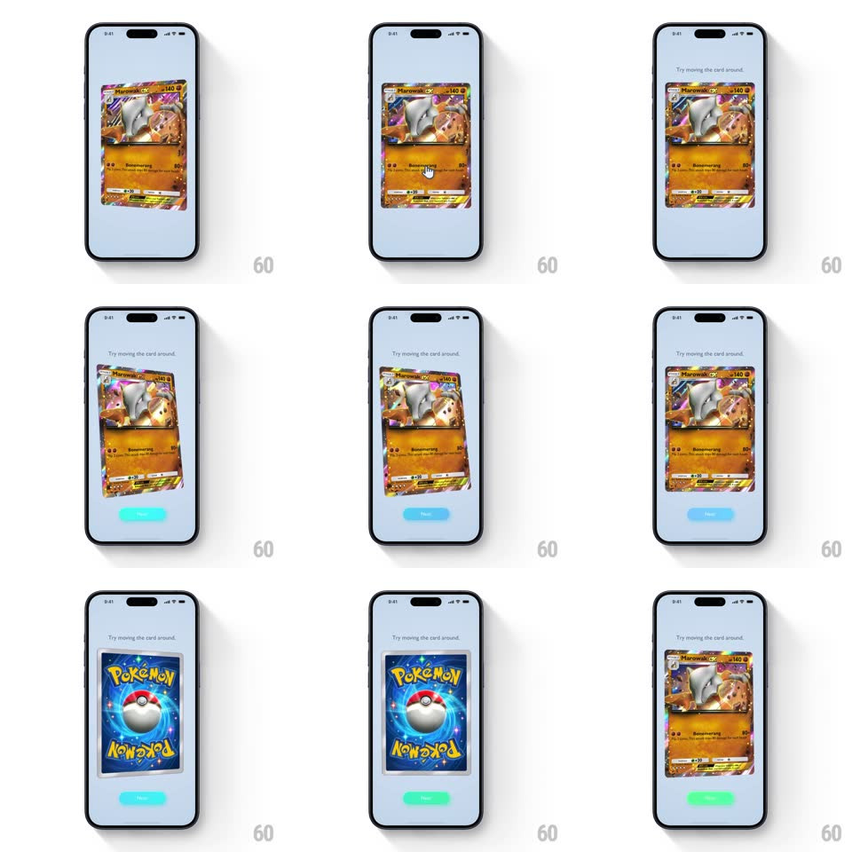

Media
Frame-by-frame

Rebuild this interaction 1:1: Pokemon TCG Pocket's card tooltip - the "Try moving the card around." onboarding screen: a holographic Marowak ex card tilts in 3D under your drag with a sweeping holo shine, and tapping flips it over to the Pokemon card back.

Rebuild this interaction 1:1: Pokemon TCG Pocket's card tooltip - the "Try moving the card around." onboarding screen: a holographic Marowak ex card tilts in 3D under your drag with a sweeping holo shine, and tapping flips it over to the Pokemon card back. ## Integration Integration: stack-agnostic spec - springs given as stiffness/damping, timed motions as duration + curve; map every value to your framework and animation library of choice. ## Scene Light blue-grey screen: "Try moving the card around." copy at top, a large Marowak ex card centered with a small hand-cursor hint, and a Next pill button at the bottom. The card back is the classic blue Pokemon design with the Pokeball. ## Motion spec Pattern: drag-to-tilt 3D card with tap-to-flip. - Drag on the card: it rotates in 3D following the finger (rotateX/rotateY up to +/-25deg, mapped to drag offset from the touch point) with the holographic shine sweeping across the art as a gradient band whose angle follows the tilt. - Release: the card springs back to flat (spring ~260/16, ~600ms) with a soft double wobble; the shine eases back to rest at the same time. - Tap: the card flips 180deg around its vertical axis (rotateY 0 -> 180, 500ms, ease-in-out) with a slight scale dip at the midpoint (scale 0.95 at 90deg); tap again flips back. - The hand-cursor hint drifts in a small circular path over the card (2s loop) until the first drag, then fades out for good. - Idle after 3s untouched: the card does one slow inviting sway (rotateY +/-6deg, 1.5s). ## Calibration - The holo shine is a moving specular band, not a static overlay - its angle is derived from the tilt vector. - Tilt clamps at +/-25deg - dramatic but never edge-on. ## Reduced motion Card tilts at reduced amplitude (+/-8deg) with no shine sweep; flip is a crossfade. ## Don't miss - The card back is fully rendered, not a mirrored front - the flip shows a real second face. - The shine intensifies near tilt extremes - the reward for moving it around.